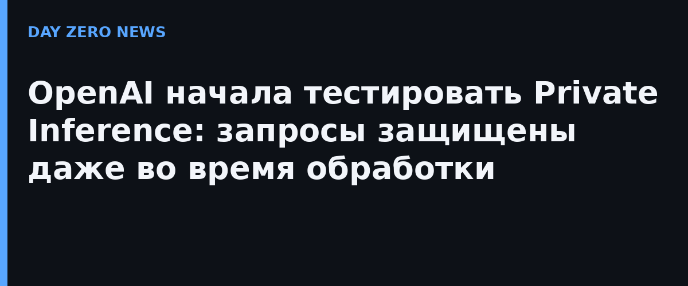

Раньше приватность больших ИИ работала по краям: данные шифруются при передаче, а Zero Data Retention обещает, что OpenAI не сохранит промпт и ответ после обработки. Но сам момент вычисления — «чёрный ящик»: запрос лежит в памяти серверов в открытом виде. Private Inference закрывает именно эту дыру: обработка идёт в доверенной среде (confidential computing) с проверяемыми аппаратными гарантиями, и даже оператор инфраструктуры не видит содержимое.
Официальная страница OpenAI прямо разделяет две гарантии: Zero Data Retention действует после обработки, а Private Inference защищает запрос и ответ во время обработки. Статус функции — Alpha, для API заявлен статус API Preview; компании уже могут оставить заявку на подключение, описав свои приватные сценарии.
Схема из первоисточника: промпт шифруется в канале, проходит сквозные проверки безопасности, затем блок Private Inference на confidential computing, и только потом приложение получает ответ. Проверка безопасности тоже уходит в автономный аттестуемый рантайм, который наружу выдаёт только служебные сигналы и разрешённые метаданные, а не открытый текст.
Отдельный слой — управление агентами: заказчик сам задаёт, к каким данным и инструментам имеет доступ агент, какие действия ему разрешены и в каких моментах нужно человеческое подтверждение. Владение входными и выходными данными закрепляется за клиентом.
Для банков, медицины и юрфирм аргумент «данные не сохраняются» раньше не снимал главного страха: данные видно в оперативке чужого дата-центра. Перенос приватности внутрь вычислений делает фронтир-ИИ применимым к действительно чувствительным задачам. OpenAI недвусмысленно привязывает анонс к DevDay 2026, где Private Intelligence представили как фреймворк корпоративной приватности, а Альтман добавил: бизнес-приватность — часть «здоровой экосистемы» ИИ.
Расширение режима на всех клиентов зависит от мощностей confidential computing, которые компания ещё наращивает — так что пока это закрытая пилотная фаза, а не общедоступная кнопка. *Отдельного поста в блоге об этом запуске нет: анонс сделан постом Альтмана в X и обновлением официальной страницы продукта.*